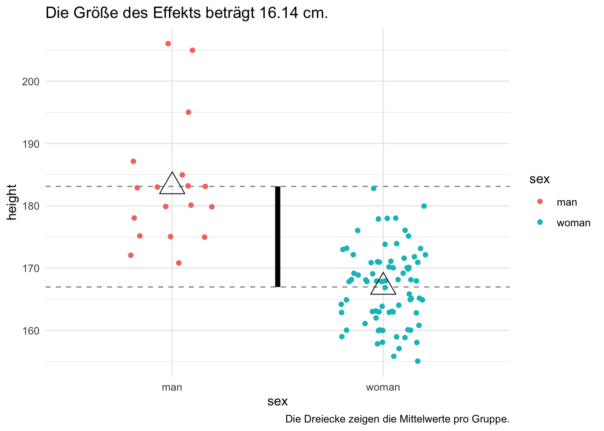

graph LR A[Begrüßung der Versuchsteilneher:innen] --> B1[Bedingung A: Ibuprofen] A --> B2[Bedingung 2: Placebo] B1 --> C[Messung des Kopfschmerzes] B2 --> C
6 Erklären
Schlüsselwörter
Versuchsplanung, Statistik, R, Datenanalyse, Psychologie, Forschung
6.1 Lernsteuerung
6.1.1 Standort im Lernpfad
Abbildung 1.2 zeigt den Standort dieses Kapitels im Lernpfad und gibt damit einen Überblick über das Thema dieses Kapitels im Kontext aller Kapitel. Behalten Sie Ihren Fortschritt im Projektplan im Blick, s. Abbildung 1.3.
6.1.2 Lernziele
- Sie können erklären, warum interventionelle Studien und speziell Experimente zur Explikation als epistemologisches Ziel von Studien eingesetzt werden können.
- Sie können Validität definieren und in ihren Bestandteilen erläutern.
- Sie können verschiedene Varianten von Versuchsdesigns aufführen.
- Sie können Qualitätsmerkmale eines Experiments nennen und erläutern.
- Sie können folgende Begriffe erläutern: Max-Kon-Min-Prinzip, Randomisieren, Störvariable.
- Sie können ein Beispiel für ein Experiment aus der Psychologie nennen und die Studie beschreiben.
6.2 Interventionelle Studien
6.2.1 Explikation
Explikation ist (hier) synonym zu Erklärung.
Definition 6.1 (Explikation) Unter Explikation versteht man das Erkenntnis des Erklärens eines wissenschaftlich untersuchten Sachverhalts. In den meisten Fällen ist damit das Identifizieren einer (oder mehrerer) Ursachen eines Phänomens gemeint. In diesem Sinne kann man sagern: Hat man eine oder gar alle Ursachen eines Phänomens erkannt, so hat man das Phänomen “erklärt”.\(\square\)
Beispiel 6.1 (Explikation) Eine Hauptursache der “Seefahrerkrankheit” Skorbut ist Vitaminmangel (Pearl & Mackenzie, 2018). Eine Ursache von Aggression ist Frustration (Jonas et al., 2014). Social Proof (soziale Bewährtheit) ist eine Ursache, so Cialdini (2017), der Entscheidungsbildung in eine gewisse Richtung.\(\square\)
6.2.2 Nicht schauen, sondern machen
In Beobachtungsstudien werden “nur” Daten erhoben, häufig in Form von Beobachtung. Im Gegensatz dazu gibt es Studien, in denen nicht “nur” beobachtet, sondern auch “gemacht” wird.
Definition 6.2 (Interventionelle Studie) Eine Interventionelle Studie (Interventionsstudie, Treatmentstudie) ist eine Studie, im Zuge derer die Versuchsobjekte auf eine Form (oder mehrere Formen) behandelt werden. Es werden also nicht nur Informationen vom Forschungsgegenstand erhoben, sondern die Forschis wirken auch auf das System, d.h. die Versuchsobjekte ein. Häufig verfolgt so eine Studie das Ziel, die Wirkung der Einwirkung auf die Versuchsobjekte zu untersuchen.\(\square\)
Interventionelle Studien werden in der Regel mit dem Ziel der Explikation,1 zumeist im kausalen Sinne, eingesetzt.
Definition 6.3 (Beobachtungsstudie) Nicht-Interventionelle bezeichnet man auch als Beobachtungsstudien, da man “nichts macht”, im Sinne von keine Ausprägungen von Variablen aktiv ändert, sondern nur beobachtet bzw. den Wert der (interessierenden) Variablen misst.\(\square\)
Definition 6.4 (Treatment) Ein Treatment (synonym: Intervention) nennt man die Behandlung, die eine Gruppe von Versuchsteilnehmis im Rahmen einer Studie erfährt (Reichardt, 2019).\(\square\)
Beispiel 6.2 (Ibuprofen und Kopfschmerz) Eine Interventionsstudie wird verwendet, um den Effekt von Ibuprofen auf (die Reduktion von) akutem Kopfschmerz zu untersuchen. Dafür werden zwei Gruppen von Versuchspersonen unterschieden: Solche, die Ibuprofen als Treatment verabreicht bekommen, und solche, die nur ein “Scheinmedikament” (Placebo) in Form einer “Zuckerpille” verabreicht bekommen, vgl. Abbildung 6.1.\(\square\)
Definition 6.5 (Experimental- vs. Kontrollgruppe) Die Bedingung (Gruppe), in der das eigentliche Treatment verabreicht wird, nennt man auch Experimentalbedingung (Experimentalgruppe). Eine Bedingung (Gruppe), in der nur ein Treatment als Referenzwert verarbreicht wird, nennt man auch Kontrollbegingung (Kontrollgruppe). Häufig ist der Referenzwert “kein Treatment” oder ein Placebo.\(\square\)
6.3 Effekt
6.3.1 Definition
Definition 6.6 (Effekt) Ein Effekt (eines Treatments \(T\)) ist hier definiert als der Unterschied im beobachteten (gemessenen) Ergebnis zwischen was passiert ist, nachdem das Treatment verabreicht wurde und was passiert wäre, wenn stattdessen eine andere Intervention verabreicht worden wäre, unter der Annahme, dass sonst alles andere gleich gewesen wäre2 (Reichardt, 2019).\(\square\)
Beispiel 6.3 Den Effekt des Ibuprofens (Treatment) auf den Kopfschmerz bezeichnen wir als \(Y(1)\). Den Effekt der Gruppe ohne Treatment auf den Kopfschmerz bezeichnen wir als \(Y(0)\).\(\square\)
Hinweis
Leider ist es unmöglich, einen Effekt direkt zu bestimmen.\(\square\)
Leider ist es per definitionem unmöglich, zu messen, was der Fall wäre, wenn die Welt anders wäre bzw. wir eine andere Intervention angewendet hätten. Man spricht daher von einer kontrafaktischen Definition. Auf dieser Basis definiert man den mittleren Treatmenteffekt (average treatment effect, AVE) wie folgt (bei einer Stichprobe oder Population der Größe N und für die AV Y).
\[AVE = \sum_i^N[Y_i(1) - Y_i(0)]\]
Man kann bei einer bestimmten Person nur entweder \(Y_i(1)\) oder \(Y_i(0)\) beobachten, aber nicht beides gleichzeitig.
6.3.2 Signal und Rauschen
Beispiel 6.4 Abbildung 6.2 zeigt die Körpergrößen einiger Studentinnen (female) und Studenten (male) eines Studiengangs der Wirtschaftspsychologie. Hintergrund ist eine (fiktive) Studie, die nach dem Unterschied der mittleren Körpergrößen, \(d\) von Studentis fragt. In dem Beispiel ist \(d\) der Effekt, auch Signal genannt. Die einzelnen Datenpunkten, also die Körpergrößen der einzelnen Personen (als Punkte dargestellt) sind Rauschen. Genauer gesagt: Die Streuung innerhalb der Gruppen “übertönt” den Effekt \(d\), diese Streuung nennt man Rauschen oder Fehlerstreuung.\(\square\)

6.3.3 Die Stärke eines Effekts als Funktion von fünf Determinanten
Die Stärke eines Effekts (eines Treatments) kann als Funktion von fünf Größen verstanden werden, s. Abbildung 6.3.
graph LR T[Treatment T] --> E[Effekt E] VP[Versuchsperson P] --> E Z[Zeit Z] --> E R[Rahmen R] --> E M[Messinstrument M] --> E
- Treatment T (Ursache U) - wie?
- ︎ Art und Menge des Treatment spielt natürlich eine Rolle (50 mg Ibuprofen wirken anders als 500 mg).
- Versuchsperson (bzw. Versuchsobjekt) P - wer?
- Auf den Versuchsobjekten wird das Treatment angewendet und die Effekte gemessen.
- Die Effekte können also zwischen den Versuchsobjekten variieren.
- Zeit Z - wann?
- Der Effekt hängt vom Zeit des Treatments ab und von der Periode zwischen Applikation und Messung des Effekts.
- Rahmen R - wo?
- Eine Kopfschmerztablette wirkt vielleicht besser, wenn sie während eines entspannenden Bades an einem ruhigen Abend zuhause eingenommen wird (als während eines stressigen Projektmeetings).
- Messinstrument M - was?
- Je nach verwendeten Messinstrument oder Zielvariablen können die Effekte des Treatments deutlicher oder weniger deutlich zum Tragen kommen.
Prägnant zusammengefasst, kann man sagen, dass die Effektstärke (die Größe eines Effekts) eine Funktion von fünf Determinanten ist:
\[ES = f(ZURMO)\]
6.4 Validität
Definition 6.7 (Validität) Unter der Validität einer Studie versteht man die Gültigkeit in dem Sinne, ob die fünf Determinanten korrekt erkannt/beurteilt sind. In dem Maße wie sie falsch beurteilt sind, ist die Validität einbeschränkt.\(\square\)
Fehlzuordnungen in den fünf Determinanten begrenzen die Gültigkeit (Validität) eines Effekts.\(\square\)
- Treatment T (Ursache U) - wie?
- Eine neue Coachingmethode (T) hat keinen Effekt, aber die Freundlichkeit des Coaches wurde fälschlich als Effekt des Treatments T interpretiert.
- Der Effekt ist also nur ein “Scheineffekt”, kein echter Effekt, da er nicht auf die in der Studie angenommene Ursache, das Treatment, zurückzuführen ist (sondern auf die Freundlichkeit des Coaches).
- Versuchsperson (bzw. Versuchsobjekt) P - wer?
Die Autoris der Studie gaben an, die Teilnehmer:innen waren „Health care professionals“, dabei handelte es sich um ungelernte Hilfskräfte.
Der Effekt ist also nicht in der angegebenen Population, sondern einer anderen (bei ungelernten Hilfskräften), beobachtet worden.
Die Gültigkeit ist insofern eingeschränkt: Die Population ist falsch benannt.
Die Teilnehmis waren nicht kooperativ und haben sich nicht an die Instruktionen gehalten.
Das Treatment hätte einen Effekt, aber er konnte sich nicht zeigen, da die Teilnehmis sich nicht an die Instruktionen gehalten haben.
- Zeit Z - wann?
- Die Forscherin nahm an, das Treatment habe keinen Effekt, aber sie hat nur zu früh gemessen.
- Rahmen R - wo?
- Die Kopfschmerztablette wurde während eines stressigen Projektmeetings eingenommen. Wäre sie in einem entspannten Umfeld eingenommen worden, so hätte sie einen Effekt gehabt.
- Messinstrument M - was?
- Der Statistiktest des Professors hat nicht das Statistikwissen gemessen, sondern die Spick-Kompetenz (aber die dafür sehr genau). Leider fiel das dem Prof nicht auf (leider für den Prof, die Studis fanden es super).
6.4.1 Interne Validität
Die interne Validität kann als Spezialfall der Konstruktvalidität gesehen werden. Die interne Validität fragt, inwieweit der Determinant der Ursache korrekt bekannt ist: Ist die angenommene Ursache tatsächlich auch die Ursache der beobachten Effekte?
Definition 6.8 (Interne Validität) Die interne Validität betrifft die korrekte Spezifikation des Determinanten Ursache.\(\square\)
Bedrohungen bzw. Einschränkungen der internen Validität beziehen sich nur bestimmte Fehlbeschreibungen beim Determinanten der Ursache (U): Störvariablen, die auch ohne das Treatment zu einen Effekt führen würden.
- Versuchsperson (bzw. Versuchsobjekt) P - wer?
- In einer medizinischen Studie werden die gesünderen Patienten in die Gruppe mit dem neuen Medikament gebracht, aber die kränkeren in die Gruppe mit dem bisherigen Standard-Medikament.
- Allein schon durch diese Zuordnung zeigte sich ein Effekt; das Treatment war unwirksam.
- Zeit Z - wann?
- Zur Messung von Stress wird Speichel-Kortisol entnommen. Die Proben der Experimentalgruppe bleiben aber zulange der Raumtemperatur und Sauerstoff ausgesetzt (im Gegensatz zu den Proben der Kontrollgruppe).
- Das Treatment hatte keinen Effekt, aber allein durch die unterschiedliche Exposition mit Sauerstoff fand sich ein Effekt.
- Rahmen R - wo?
- Die Verabreichung des neuen Medikaments fand in einer Wellness-Klinik statt. Das alte Medikament im Keller des alten Krankenhauses.
- Das Treatment (neues Medikament) hatte keinen Effekt, aber allein der Rahmenbedingung fand sich ein Effekt zugunsten des neuen Medikaments.
- Messinstrument M - was?
- In der Kontrollgruppe wurde ein erfahrener Beobachter zur Analyse des Assessment-Centers eingesetzt, in der Treatmentgruppe aber der Praktikant, der von Tuten und Blasen keine Ahnung hatte.
- Das Treatment hatte einen Effekt, konnte sich aber nicht zeigen, da der Beobachter des Messens nicht mächtig war.
6.4.2 Externe Validität
Definition 6.9 (Externe Validität) Externe Validität fragt, wie gut ein Effekt verallgemeinert werden kann, z. B. auf andere Personen, Situationen, Populationen.\(\square\)
- Treatment T (Ursache U) - wie?
- Eine Forscherin hat nur einen Teil eines neuen Coachingskonzepts in einem Treatment umgesetzt. Sind die Ergebnisse jetzt auf das ganze Coachingkonzept verallgemeinerter?
- Versuchsperson (bzw. Versuchsobjekt) P - wer?
- Ein Krebsmedikament wurde nur an älteren Frauen evaluiert (und dies hat das Forscherteam korrekt angegeben). Ob der Effekt wohl auch für andere Altersgruppen und Geschlechter gilt?
- Zeit Z - wann?
- Ein Allergiemittel reduziert kurzfristig die relevanten Symptome. Aber ob es wohl auch langfristig Effekte hat?
- Rahmen R - wo?
- Die Wirksamkeit einer Kopfschmerztablette wurde nur in für die Versuchsteilnehmis entspannten Settings erfasst. Ob sie wohl auch wirkt, wenn sich die Personen in stressigen Projektmeetings befinden?
- Messinstrument M - was?
- Finden sich die Effekte des Vorschultrainings wohl nicht nur in einem bestimmten Intelligenztest, sondern auch in anderen? Haben sie vielleicht auch Effekte auf die emotionale (nicht nur kognitive) Entwicklung des Kindes?
6.4.3 UV und AV
Die Unabhängige Variable (UV) entspricht dem Treatment und damit der angenommenen Ursache des Effekts. Die UV hängt von keiner anderen Variablen ab, in dem Sinne, dass dis Forschi selber bestimmt, welche Versuchspersonen welche Ausprägung in der UV zugewiesen bekommen (oder selber entscheidet, den Zufall entscheiden zu lassen).
Häufig hat die UV zwei Stufen:
- Treatment
- Kein Treatment
Die Abhängige Variable (AV) bezeichnet die Variable, die den Effekt misst, die Wirkung des Treatments. Die Forschungsfrage formuliert, dass die AV von der UV kausal und statsistisch abhängig ist.
graph LR UV --> AV
Die Begriffe UV und AV machen nur Sinn, wenn es eine Intervention in der Studie gibt.
6.4.4 Wann ist eine Ursache wirklich eine Ursache
Nach John Stuart Mill müssen drei Bedingungen erfüllt sein, damit eine vermeintliche Ursache wirklich die Ursache eines Effekts ist:
Zusammenhang. Es muss einen statistischen Zusammenhang (Kovariation) zwischen der UV und der AV geben (z. B. in Form einer Korrelation).
UV zeitlich vor AV. Veränderungen in der UV müssen zeitlich vor den Änderungen der AV auftreten.
Ausschluss anderer Ursachen. Alternativerklärungen für den Zusammenhang von UV und AV müssen ausgeschlossen sein, entweder auf theoretischer oder empirischer Basis.
6.5 Varianten interventioneller Versuchsdesigns
Man kann Studien (bzw. deren Aufbau, das Design) dahingehend unterscheiden, ob die Versuchspersonen alle Bedingungen nacheinander durchlaufen (Within-Subject-Design) oder ob jede Versuchsperson genau eine Bedingung durchläuft (Between-Subject-Design). Jede Variante hat Stärken und Schwächen, aber wenn möglich sollte man oft zu einem Within-Subject-Design tendieren.
6.5.1 Between- vs. Within-Subject-Designs
6.5.1.1 Between-Subject-Designs
Definition 6.10 Bei einem Between-Subject-Design werden die Versuchspersonen genauer einer von zwei (oder mehreren) Gruppen (Bedingung) zugeordnet. Jede Person durchläuft nur eine Bedingung.\(\square\)
Beispiel 6.5 Ei Forschi untersucht den Effekt von Achtsamkeit auf die Konzentrationsfähigkeit. Zur Umsetzung wählt i ein Between-Subject-Design. Eine Hälfte der Versuchspersonen wird zufällig der Experimentalgruppe (Achtsamkeitsübung) zugeteilt, die zweite Hälfte der Kontrollgruppe (Daddeln am Handy). Vor und nach der Intervention wird bei jeder Person die Konzentationsfähigkeit gemessen, s. Abbildung 6.4.\(\square\).
graph LR M1[Messung 1 der Konzentration] --> R[Gruppenzuweisung] R --> G1[Experimentalgruppe] R --> G2[Kontrollgruppe] G1 --> M2[Messung 2 der Konzentration] G2 --> M2[Messung 2 der Konzentration]
In einigen Situationen ist eine Messung der AV vor dem Treatment nicht nötig; grundsätzlich ist sie aber zu bevorzugen.
6.5.1.2 Within-Subject-Design
Definition 6.11 Bei einem einfachen Within-Subject-Design durchäuft jede Versuchsperson alle Versuchsbedingungen in gleicher Reihenfolge, s. Abbildung 6.5.\(\square\)
graph LR M1[1. Messung der Konzentration] --> I1[Treatment 1] I1 --> M2[2. Messung der Konzentration] M2 --> I2[Treatment 2] I2 --> M3[3. Messung der Konzentration]
Das einfache Within-Subject-Design hat den Nachteil, dass Reihenfolge-Effekte möglich sind.
Beispiel 6.6 Ei Forschi untersucht den Effekt von Achtsamkeit auf die Konzentrationsfähigkeit. In dieser Studie führen alle Versuchspersonen eine Achtsamkeitsübung aus (Treatment 1); danach folgt eine Zeit des Handy-Daddelns (Treatment 2). Vor und nach den Treatments findet jeweils eine Konzentrationsmessung statt.\(\square\)
Beispiel 6.7 Ei Forschi untersucht den Effekt des Markennamens von Süßwaren auf die Geschmacksbeurteilung. Zuerst bekommen alle Versuchspersonen ein Markenprodukt dargeboten; danach folgt für alle ein No-Name-Produkt. Vor der ersten, nach der ersten und nach der zweiten Verkostung wird jeweils der Geschmack des Produkts beurteilt.\(\square\)
Definition 6.12 Bei einem Between-Within-Subject-Design durchäuft jede Versuchsperson alle Versuchsbedingungen, aber die Reihenfolge unterscheidet sich zwischen den Versuchspersonen, s. Abbildung 6.6.\(\square\)
graph LR M1[1. Messung der Konzentration] --> R[Zuweisung zu den Reihenfolge-Gruppen] R --> G1[Treatment 1] R --> G2[Treatment 2] G1 --> M2[2. Messung der Konzentration] G2 --> M2 M2 --> G11[Treatment 2] M2 --> G22[Treatment 1] G11 --> M3[3. Messung der Konzentration] G22 --> M3
6.5.1.3 Stärken und Schwächen
Within- und Between-Subject-Designs haben jeweils Stärken und Schwächen:
Stärke des Within-Subject-Designs: Effekte werden leichter gefunden bzw. genauer geschätzt, da es weniger Rauschen gibt. Der Grund ist, dass die Unterschiede der Treatments in den gleichen Personen untersucht werden. So vermeidet man zusätzliches Rauschen, das aufgrund verschiedener Versuchspersonen entstehen würde. Anders gesagt reicht eine kleinere Stichprobe, um einen Effekt genau zu schätzen.
Stärke des Between-Subject-Designs: Manche Forschungsfragen erlauben keine wiederholte Intervention an den gleichen Versuchspersonen. Dann sind nur Between-Subject-Designs möglich.
Schwäche des Within-Subject-Designs: Reihenfolge-Effekte können auftreten, diese sollten kontrolliert werden anhand des Between-Within-Subject-Designs.
Beispiel 6.8 Ei Forschi untersucht den Effekt der UV “Witz erzählen mit und ohne Lacher abgespielt im Hintergrund” auf die wahrgenommenen Lustigkeit eines Witzes. Einen Witz zum zweiten Mal zu hören, wird die Lustigkeit gegen Null gehen lassen. Daher ist in diesem Fall ein Within-Subject-Design kaum möglich.\(\square\)
Tipp
Wenn möglich sollte ein Within-Subject-Design - in der Variante mit Kontrolle der Reihenfolge (also Between-Within-Subject-Design) - bevorzugt werden.\(\square\)
6.5.2 Experiment als Königsweg
Definition 6.13 (Experiment) Ein Experiment (im engen Sinne des Wortes) ist ein Spezialfall einer interventionellen Studie. Es hat Explikation als epistemologisches Ziel, zumeist in Form einer Kausalaussage. Methodisch zeichnet es sich durch folgende Merkmale aus:
- Kausalmodell: Trennung mindestens einer unabhängigen Variablen (UV) von einer abhängigen Variablen (AV), wobei die AV gemäß der zu prüfenden Hypothese von der UV (kausal) beeinflusst wird.
- Intervention: Systematische Variation bzw. Manipulation der Einflussgrößen (UV), um ihre Auswirkung auf die AV zu beobachten (Experimental- vs. Kontrollgruppe)
- Kontrolle und Standardisierung: Kontrolle anderer Einflussfaktoren („Störvariablen“) auf die AV
- Randomisierung: Zufällige Zuordnung von Versuchspersonen zu Versuchsbedingungen oder der Reihenfolge von Versuchsbedingungen
Wichtig
Wann immer Experimente ethisch unbedenklich bzw. vertretbar und praktisch durchführbar sind, stellen sie das Mittel der Wahl dar, um Kausalzusammenhänge zu prüfen. Experimente gelten als der “Königsweg” der Forschung.\(\square\)
Beispiel 6.11 Zu den berühmtesten Experimente in der Psychologie zählen (u.a.) Milgrams Experiment zum Autoritäteneinfluss, Pavlovs Experimente zur klassischen Konditionierung, Aschs Konformitätsstudien oder Libets Experiment zum freien Willen.3
6.6 Die Kunst des Experimentierens
6.6.1 MAX-KON-MIN-Prinzip
Die Kunst des Experiments (bzw. des Experimentierens) kann man mit dem Max-Kon-Min-Prinzip zusammenfassen. Abbildung 6.7 stellt das Max-Kon-Min-Prinzip dar.
graph LR
subgraph MKM[Max-Kon-Min-Prinzip]
MAX
KON
MIN
end
- MAXimiere das Signal (Primär- oder Behandlungsvarianz)
- KONtrolliere das Rauschen (Sekundärvarianz, systematischer Fehler)
- MINimiere das Rauschen (Zufallsfehler): Vermeide unsystematische (zufällige) Merkmalsfluktuationen auf Seiten der Versuchssituation, der Datenerfassung und der Datenverarbeitung.
6.6.1.1 Maximiere das Signal
Wähle die Stufen der UV so, dass möglichst große Unterschiede in der AV zwischen den Gruppen entstehen:
- Wähle Extremgruppen
- Intensiviere das Stimulusmaterial
- Stelle sicher, dass die Intervention gut funktioniert
Ziel: die Effekte der UV durch die Versuchsplanung möglichst „maximal“ zum Vorschein bringen.
Achtung: Die Wahl von Extremgruppen birgt die Gefahr von Trivialergebnissen.
6.6.1.2 Kontrolliere das Rauschen
Sorge dafür, dass systematische Fehler (bekannte Störvariablen) in allen Gruppen gleich wirken und/oder bestimme deren Einfluss:
- Nutze einer Coverstory
- Verblinde die Versuchspersonen und -durchführende
- Halte Störfaktoren konstant
- Randomisiere die Versuchspersonen
- Wandle Störfaktoren in UV um
- Schalte Störfaktoren aus (z. B. mittels eines schalldichten Raums)
- Balanciere die Gruppen aus (in jeder Versuchsbedingung z. B. die Hälfte in den lauten und die Hälfte in leisen Raum)
- Rechne nachträglich das Rauschen heraus mittels statistischer Verfahren (Kovarianzanalyse)
Kontrolltechniken:
- vor der Datenerhebung
- Umwandlung von Sekundärvarianz bzw. Störvariable in UV
- Randomisierung
- Parallelisierung
- Messwiederholung
- während der Datenerhebung
- Konstanthalten der Versuchsbedingungen
- nach der Datenerhebung
- statistische Kontrolle
Beispiel 6.9 (Der weiße Kittel) Ein Versuchsleiter untersucht den Effekt von extensiver Handynutzung auf die Konzentrationsfähigkeit. Er ist stolz auf sein Labor mit leistungsfähigen Geräten, die er nutzt, um seine Versuchspersonen genau zu vermessen: Herzfrequenz, Hautleitwiderstand, Blutdruck, EEG … Die Probanden werden bei ihm ordentlich verkabelt. Leider scheint das einige Probanden zu stören, sie fühlen sich sichtlich unwohl, so kabelbehangen.4 Es ist davon auszugehen, dass das “Verkabeln” einen Effekt auf die Versuchspersonen bzw. deren Verhalten hat. Das Verhalten der Versuchspersonen, bzw. die Variabilität in ihrem Verhalten, steigt: Je nach dem wie sehr sich jemand vom Verkabeln gestört fühlt, wird sie oder er anders reagieren. Damit sind die eigentlichen Effekte (des Treatments, Handynutzung) weniger gut oder weniger einfach festzustellen, da sie durch zusätzliche Einflüsse stärker übertönt werden. Der Versuchsleiter täte gut daran, behutsamer mit den Vesuchspersonen umzugehen.\(\square\)
Ziel: Effekte von „Nicht-UVn“, die als Störvariablen einen systematischen Einfluss haben können, bestmöglich unter Kontrolle halten.
Beispiel 6.10 (Motivation und Geschlecht als UV) Eine Bildungsforscherin untersucht den Einfluss von Flipped-Classroom (Experimentalgruppe) im Vergleich zu Frontalunterricht (Kontrollgruppe). Da sie die Vermutung hat, dass Geschlecht und Motivation einen Einfluss auf die AV (Lernerfolg) haben, entschließt sie sich, Geschlecht und Motivation als weitere UV in ihren Versuchsplan aufzunehmen. Das bedeutet natürlich, dass sie mehr Untersuchungsbedingungen abzuarbeiten hat. Aber sie freut sich: Der Einfluss von Geschlecht und Motivation kann ihr nicht mehr den Effekt verwässern!\(\square\)
6.6.1.3 Minimiere das Rauschen
Vermeide unsystematische (zufällige) Merkmalsfluktuationen auf Seiten der Versuchssituation, der Datenerfassung und der Datenverarbeitung.
Kontrolltechniken:
- Kontrollierte Untersuchungsbedingungen (Abschirmung, Eliminierung, Instruktion)
- Einsatz reliabler, valider und objektiver Erhebungsinstrumente (Beobachter, Messinstrumente)
- Doppelte Dateneingabe, um (Tipp-)Fehler zu vermeiden
- Messwiederholungsdesign
Ziel: Auswirkungen von unbekannten Störvariablen und (Daten-) Fehlern so klein wie möglich halten
Eine zentrale Rolle, um Rauschen zu minimieren, ist die Instruktion: Die Information, die die Versuchspersonen vom Versuchsleiter erhalten, damit die Versuchspersonen wissen, was sie tun sollen. Die Instruktion im weiteren Sinne umfasst nicht nur den verbalen Anweisungsteil, sondern alle Versuchsumstände: die Umgebung, das Verhalten des Versuchsleiters, usw. Die Instruktion sollte daher möglichst schriftlich ausformuliert und standardisiert sein.
6.6.2 Randomisieren
Definition 6.14 (Randomisieren) Randomisieren ist das zufällige Zuteilen von Versuchsobjekten (z. B. Versuchspersonen) zu Versuchsbedingungen einer interventionellen Studie. Durch das Randomisieren sollen die alle personengebundenen Variablen in den Versuchsbedingungen gleiche Verteilungen erlangen, z. B. gleiche Mittelwerte. Wenn dies gewährleistet ist, sind Unterschiede zwischen den Versuchsbedingungen in der AV nicht mehr auf personenbezogene Unterschiede zurückzuführen. Auf diese Weise können wichtige Alternativerklärungen für den beobachteten Effekt ausgeschlossen werden.\(\square\)
👨🏫 Hey Bot, erkläre “Randomisierung”.
🤖 Randomisierung ist ein wichtiger Aspekt von Experimenten und bezieht sich auf den Prozess der zufälligen Zuweisung von Teilnehmern oder Einheiten zu den verschiedenen Behandlungsgruppen oder Bedingungen eines Experiments. Die Randomisierung soll sicherstellen, dass die Teilnehmer oder Einheiten jeder Gruppe ähnlich sind, bevor die experimentelle Behandlung durchgeführt wird. Durch die zufällige Zuweisung der Teilnehmer oder Einheiten zu den Gruppen wird sichergestellt, dass mögliche Störfaktoren oder Einflüsse, die die Ergebnisse beeinflussen könnten, gleichmäßig auf die verschiedenen Gruppen verteilt werden. Dadurch wird die interne Validität des Experiments gestärkt und die Wahrscheinlichkeit verringert, dass die Ergebnisse auf Zufälligkeiten oder systematischen Verzerrungen zurückzuführen sind. Die Randomisierung ist ein wichtiges Merkmal eines Experiments, da sie eine grundlegende Voraussetzung für die Interpretation der Ergebnisse und die Übertragbarkeit auf die Population darstellt. Ohne Randomisierung können Verzerrungen in der Stichprobe und eine Einschränkung der Generalisierbarkeit auftreten.5
Definition 6.15 (Experiment) Ein Experiment ist eine Interventionsstudie und hat daher Explikationsanspruch, meist kausaler Art; es zeichnet sich durch Kontrolle von Rauschen (Störvariablen) aus sowie durch Randomisieren.\(\square\)
Tipp
Die Stichproben der Bedingungen Ihres Experiments sollten (möglichst) gleich groß sein, das erhöht die Schätzgenauigkeit der Populationsparameter.\(\square\)
Laut Saint-Mont (2015) kann man sich auf den Segen der Randomisieren erst bei hohen6 Stichprobengrößen verlassen. Eine Vorab-Prüfung der AV, um die Vergleichbarkeit der Gruppen zu prüfen, bietet sich daher an.
Übungsaufgabe 6.1 (Welche Alternativen gibt es zum Randomisieren in einem Experiment?) Stellen Sie ChatGPT diese Frage und beurteilen Sie die Güte der Information!\(\square\)
6.7 Störvariablen
Meist gibt es viele kausale Variablen, die eine AV beeinflussen (können). In einer Studie oder einem Experiment interessiert häufig nur der Einfluss einer bestimmten Variablen, um eine spezifische Hypothese zu prüfen (die UV).
Definition 6.16 (Störvariable) Eine Variable, die die AV beeinflusst, aber nicht die UV ist und nicht gemessen ist, heißt Störvariable.\(\square\)
Störvariablen mögen selbst theoretisch interessant sein, in einem Experiment versucht man jedoch, sie unter Kontrolle zu bringen, um den Einfluss der interessierenden UV untersuchen zu können Kontrolliert man Störvariablen nicht, kann eine Veränderung in AV nicht eindeutig auf UV zurückgeführt werden, ein Kausalschluss ist dann nicht möglich. Beobachtungsstudien haben meist weniger Kontrolle über Störvariablen als Studien mit Intervention. Studien in kontrolliertem Umfeld sind meist in geringerem Maße Störvariablen ausgesetzt als Studien in „freier Wildbahn“. Studien mit Randomisierung umgehen das Problem der personengebundenen Störvariablen (wenn die Fallzahl groß genug ist).
Wird eine Störvariable kontrolliert, so spricht von von einer Kontrollvariablen.
Übungsaufgabe 6.2 (Nenne Beispiele von Störvariablen) Fragen Sie ChatGTP nach Beispielen von Störvariablen und diskutieren Sie die Qualität der Antwort.\(\square\)
6.8 Typische Versuchspläne
6.8.1 Zwei-Gruppen-Nachher-Messung
Teilt man die Versuchspersonen in zwei Gruppen ein (idealerweise durch Randomisierung), wendet dann die Intervention an und misst abschließend die AV, so spricht man von einem Zwei-Gruppen-Nachher-Messung-Design, s. Abbildung 6.8.
graph LR A[Begrüßung und Aufklärung</br>der Probanden] --> C[Messung soziodemografischer</br>Variablen] C --> D[Aufteilung in Gruppen] D --> E1[Experimentalgruppe] D --> E2[Kontrollgruppe] E1 --> F[Messung der AV] E2 --> F F --> G[Verabschiedung]
6.8.2 Zwei-Gruppen-Vorher-Nachher-Messung
Teilt man die Versuchspersonen in zwei Gruppen ein (idealerweise durch Randomisierung), misst zunächst (zum ersten Mal) die AV, wendet dann die Intervention an und misst abschließend die AV (zum zweiten MAl), so spricht man von einem Zwei-Gruppen-Vorher-Nachher-Messung-Design, s. Abbildung 6.9.
graph LR A[Begrüßung und Aufklärung</br>der Probanden] --> C[Messung soziodemografischer</br>Variablen] C --> C2[Messung der AV] C2 --> D[Aufteilung in Gruppen] D --> E1[Experimentalgruppe] D --> E2[Kontrollgruppe] E1 --> F[Messung der AV] E2 --> F F --> G[Verabschiedung]
6.8.3 Kovarianzanalyse
Bei der Kovarianzanalyse, ein Auswertungsansatz, kein Forschungsdesign, misst man neben der UV noch andere Variablen, die man kontrollieren möchte. Deren Einfluss wird nach der Datenerhebung statistisch kontrolliert, “herausgerechnet”.
6.9 Weiterführende Literatur
Bei Reichardt (2019) findet sich eine umfassende Erläuterung des Handwerks der interventionellen Forschung. Ein Klassiker ist Bortz & Döring (2006), in dem sich viel Essenzielles zur Versuchsplanung findet. Einen zugänglichen Einstieg (allerdings auf englischer Sprache), der kostenlos und frei verfügbar ist, bieten Jhangiani et al. (2019). Recht nützlich ist auch der Überblick von Peters & Dörfler (2019).
auch als Explanation bezeichnet↩︎
ceteris paribus↩︎
Bei Wikipedia findet sich eine Liste bekannter psychologischer Experimente.↩︎
Das Abrasieren von Haarstellen für bessere Haftung der EEG-Elektroden musste er aufgeben.↩︎
ChatGTP, 2023-04-23, Prompt: “Erkläre Randomisieren als Merkmal eines Experiments”.↩︎
vierstelligen↩︎